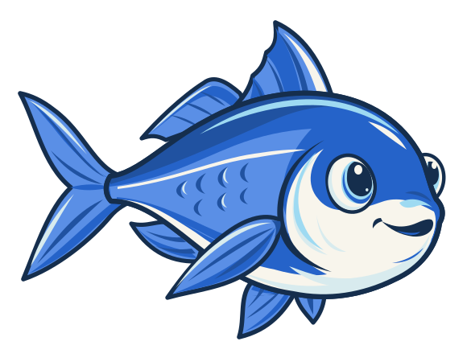

Contextual interaction selection
The selector chooses a directed graph from trajectory and team context. Only selected pairs are passed to the expensive correction model R.

Akule / ResearchAkule learns which pairwise interactions to evaluate and how to combine their corrections for efficient planning across robot team sizes.
Anonymous research release accompanying the submitted paper
Independent robot trajectories can conflict. Evaluating every ordered pair at every diffusion step becomes expensive as the team grows.
Akule separates which interactions to evaluate from how to combine their corrections. A frozen single-robot prior provides motion proposals; learned selection and signed composition coordinate them before downstream validation and repair.
Diffusion models provide expressive trajectory priors for multi-robot motion planning (MRMP), but scaling them to large teams requires coordinating individual motions without expensive joint computation. We introduce Akule, a sparse interaction diffusion framework that augments a frozen single-robot prior with three learned modules: a reusable pairwise correction model Rφ, a contextual selector Uψ that determines which corrections to evaluate, and a composer Gω that combines their effects through context-dependent signed weights. This decomposition separates which interactions merit computation from how their effects should be combined into coordinated denoising updates. We train Rφ using matched pairwise trajectory optimizations, then learn Gω and Uψ from physically optimized joint trajectories without requiring a prescribed ground-truth interaction graph. The resulting joint proposals are passed to a downstream search-based planner for validation and repair. Across diverse MRMP benchmarks, Akule achieves competitive planning success, complete-planner speedups of up to 25×, zero-shot population transfer, and successful planning with up to 256 robots. Ablations further demonstrate that learned selection and composition reduce pre-repair conflicts and downstream repair effort relative to heuristic selection and uniform summation. Project website: https://akule-diff.github.io/
The selector chooses a directed graph from trajectory and team context. Only selected pairs are passed to the expensive correction model R.
The composer can amplify, attenuate, or reverse selected corrections. Context-dependent coefficients replace uniform summation; the resulting sum enters the denoising update.
Shared parameters and symmetric aggregation make the architecture permutation equivariant and usable across team sizes.
A frozen single-robot prior predicts goal-conditioned motion.
U selects a directed graph using trajectory and team context.
The reusable R model evaluates only selected pairwise interactions.
G combines corrections through context-dependent signed weights.
Downstream search validates the joint proposal and repairs conflicts.
Weave and SMD use interaction-aware reverse-diffusion rollouts. Highways and Conveyor apply one interaction correction at t=0 to selected independently generated candidates.
Final manuscript results across eight environments and 44 environment–population configurations.
Complete-planner speedups across the evaluated benchmark settings.
The paper reports 8/10 successful ScaledWeave tasks at N=256.
One Weave coordination model, trained at N=28 and evaluated unchanged at N=20 and N=10.
P/A: path length / acceleration. Values and reported precision are preserved from the manuscript. Download table data ↗
Complete 2D panels for every evaluated population. Select an environment and team size to compare the methods shown.
Qualitative comparisons use the supplied panels with their original method order, labels, colors, and timing. Quantitative planning results are reported separately above. On smaller screens, open the full-resolution clip to inspect panel labels.
Download the frozen checkpoints and evaluate saved scenes with benchmark-specific inference and repair.
Explore the Akule repository ↗GIT_LFS_SKIP_SMUDGE=1 git clone https://github.com/akule-diff/Akule.git
cd Akule
uv sync --locked
uv run python scripts/download_checkpoints.py --env weave
uv run python scripts/evaluate.py --env weave --n 28 \
--mode sparse --repairAnonymous research artifact for the submitted AAMAS paper.
@misc{akule2027,
title = {Akule: Fast and Scalable Multi-Robot Motion
Planning via Sparse Interaction Diffusion},
author = {Anonymous},
year = {2027},
note = {Submitted to AAMAS. Anonymous research release}
}